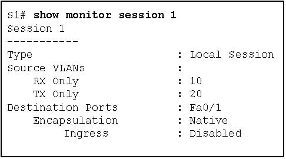
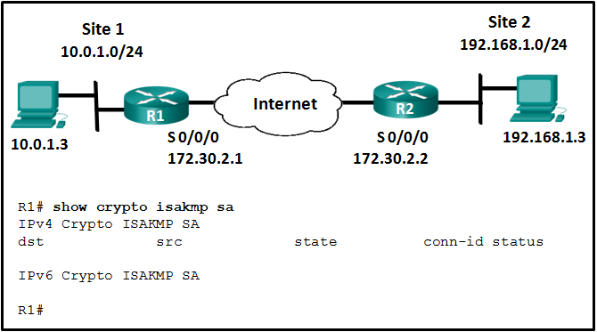

1.¿Qué tres áreas de seguridad del enrutador deben mantenerse para asegurar un enrutador de borde en el perímetro de la red? (Elige tres.)
- seguridad física *
- flash de seguridad
- seguridad del sistema operativo *
- endurecimiento del enrutador *
- @javi__super
Hay tres áreas de seguridad del enrutador para mantener:
1) seguridad física
2) refuerzo del enrutador
3) seguridad del sistema operativo
2.¿Cuál es el propósito de la contabilidad AAA?
- Para probar que los usuarios son quienes dicen ser.
- Para determinar qué operaciones puede realizar el usuario.
- Para determinar a qué recursos puede acceder el usuario.
- para recopilar y reportar el uso de datos *
- @javi__super
La contabilidad AAA recopila y reporta datos de uso. Estos datos se pueden utilizar para fines de auditoría o facturación. La autenticación AAA es el proceso de verificar que los usuarios son quienes dicen ser. La autorización AAA es lo que los usuarios pueden y no pueden hacer en la red una vez que se autentican.
3.¿Qué enunciado describe con precisión la operación del Firewall de políticas basadas en la zona de Cisco IOS?
- La acción de pase funciona en una sola dirección. *
- Las políticas de servicio se aplican en el modo de configuración de la interfaz.
- Una interfaz de enrutador puede pertenecer a múltiples zonas.
- Las interfaces de administración del enrutador deben asignarse manualmente a la zona de autoservicio.
- @javi__super
4.¿En qué servicio o protocolo se basa el protocolo de copia segura para garantizar que las transferencias de copia segura sean de usuarios autorizados?
- RADIO
- SNMP
- AAA *
- IPsec
- @javi__super
El protocolo de copia segura (SCP) se utiliza para copiar de forma segura las imágenes de IOS y los archivos de configuración en un servidor SCP. Para realizar esto, SCP utilizará conexiones SSH de usuarios autenticados a través de AAA.
5.¿Qué dos afirmaciones describen el uso de algoritmos asimétricos? (Escoge dos.)
- Las claves públicas y privadas se pueden usar indistintamente.
- Si se utiliza una clave pública para cifrar los datos, se debe utilizar una clave pública para descifrar los datos.
- Si se usa una clave privada para cifrar los datos, se debe usar una clave pública para descifrar los datos. *
- Si se utiliza una clave pública para cifrar los datos, se debe utilizar una clave privada para descifrar los datos. *
- @javi__super
Los algoritmos asimétricos utilizan dos claves: una clave pública y una clave privada. Ambas claves son capaces del proceso de cifrado, pero se requiere la clave complementaria coincidente para el descifrado. Si una clave pública cifra los datos, la clave privada correspondiente descifra los datos. Lo opuesto también es cierto. Si una clave privada cifra los datos, la clave pública correspondiente descifra los datos.
6.Consulte la presentación. Según la salida generada por el comando show monitor session 1, ¿cómo funcionará SPAN en el switch?

- Todo el tráfico recibido en la VLAN 10 o transmitido desde la VLAN 20 se reenvía a FastEthernet 0/1. *
- El tráfico VLAN nativo transmitido desde la VLAN 10 o recibido en la VLAN 20 se reenvía a FastEthernet 0/1.
- Todo el tráfico transmitido desde la VLAN 10 o recibido en la VLAN 20 se reenvía a FastEthernet 0/1.
- El tráfico VLAN nativo recibido en la VLAN 10 o transmitido desde la VLAN 20 se reenvía a FastEthernet 0/1.
- @javi__super
El comando show monitor session se usa para verificar cómo se configura SPAN (qué puertos están involucrados en la duplicación de tráfico)
7.Consulte la presentación. Se configuró la política ISAKMP para el túnel IKE Fase 1, pero el túnel aún no existe. ¿Qué acción se debe tomar a continuación antes de que puedan comenzar las negociaciones de IKE Fase 1?

- Configure el conjunto de algoritmos de cifrado y hash que se utilizarán para transformar los datos enviados a través del túnel IPsec.
- Vincule el conjunto de transformación con el resto de la política de IPsec en un mapa criptográfico.
- Configure una ACL para definir el tráfico interesante. *
- Configurar la duración del túnel IPsec.
- @javi__super
Aunque la política ISAKMP para el túnel IKE Fase 1 está configurada, el túnel aún no existe como se verificó con el comando show crypto isakmp sa. Se debe detectar el tráfico interesante antes de que puedan comenzar las negociaciones de IKE Fase 1. Para definir el tráfico interesante, cada enrutador debe configurarse con una ACL para permitir el tráfico de la LAN local a la LAN remota.
8.¿Qué puertos pueden recibir tráfico reenviado desde un puerto aislado que forma parte de un PVLAN?
- Otros puertos aislados y puertos comunitarios.
- solo puertos promiscuos *
- Todos los demás puertos dentro de la misma comunidad.
- solo puertos aislados
- @javi__super
Las PVLAN se utilizan para proporcionar aislamiento de Capa 2 entre puertos dentro del mismo dominio de difusión. El nivel de aislamiento se puede especificar
con tres tipos de puertos PVLAN:
Puertos
promiscuos que pueden reenviar el tráfico a todos los demás puertos Puertos
aislados que solo pueden reenviar el tráfico a puertos promiscuos Puertos
comunitarios que pueden reenviar el tráfico a otros puertos comunitarios y puertos promiscuos
9.¿Cuál es el siguiente paso en el establecimiento de una VPN IPsec después de que se complete la fase 1 de IKE?
- Negociación de la política ISAKMP.
- Negociación de la política de IPsec SA *
- detección de tráfico interesante
- autenticación de compañeros
- @javi__super
El establecimiento de un túnel IPsec consta de cinco pasos:
detección de tráfico interesante definen por una ACL
Fase 1 de IKE en el que pares negocian la política de ISAKMP SA
Fase 2 de IKE en el que pares negocian IPsec SA política de
creación del túnel IPsec
terminación del túnel IPsec
10.¿Cuál es una ventaja de HIPS que no es proporcionada por IDS?
- HIPS protege los recursos críticos del sistema y monitorea los procesos del sistema operativo. *
- HIPS implementa sensores en los puntos de entrada de la red y protege los segmentos de red críticos.
- HIPS proporciona un análisis rápido de los eventos a través del registro detallado.
- HIPS supervisa los procesos de red y protege los archivos críticos.
- @javi__super
Los sensores de IDS basados en red (NIDS) generalmente se implementan en modo fuera de línea. No protegen a los anfitriones individuales. El IPS basado en host (HIPS) es un software instalado en un solo host para monitorear y analizar actividades sospechosas. Puede monitorear y proteger el sistema operativo y los procesos críticos del sistema que son específicos de ese host. HIPS puede considerarse como una combinación de software antivirus, software antimalware y un firewall.
11.¿Qué configuración de interfaz se puede configurar en ASDM a través de la pestaña Configuración del dispositivo?
- seguridad portuaria
- EtherChannel
- nivel de seguridad *
- NAT
- @javi__super
En la pestaña Configuración del dispositivo, las interfaces ASA Layer 3 se pueden crear, editar o eliminar. Nombre, nivel de seguridad y dirección IP son algunas de las configuraciones que se pueden configurar en una interfaz. No hay NAT, seguridad de puerto o configuración de EtherChannel en esta pestaña.
12.Un técnico de seguridad utiliza un algoritmo asimétrico para cifrar mensajes con una clave privada y luego reenvía esos datos a otro técnico. ¿Qué clave debe utilizarse para descifrar estos datos?
- La clave pública del receptor.
- La clave pública del remitente. *
- La clave privada del receptor.
- La clave privada del remitente.
- @javi__super
Los algoritmos asimétricos utilizan dos claves. Si una clave pública encripta los datos, la clave privada correspondiente descifra los datos. Lo opuesto también es cierto. Si una clave privada cifra los datos, la clave pública correspondiente descifra los datos.
13.¿En qué puertos de switch se debe habilitar PortFast para mejorar la estabilidad de STP?
- Solo puertos elegidos como puertos designados.
- Solo puertos que se conectan a un switch vecino.
- Todos los puertos troncales que no son puertos raíz
- todos los puertos de usuario final *
- @javi__super
PortFast traerá inmediatamente una interfaz configurada como acceso o puerto troncal al estado de reenvío desde un estado de bloqueo, omitiendo los estados de escucha y aprendizaje. Si se configura en un enlace troncal, la transición inmediata al estado de reenvío podría llevar a la formación de bucles de Capa 2.
14.¿Cuál es la función del algoritmo del Código de autenticación de mensajes hash (HMAC) en la configuración de una VPN IPsec?
- autentica a los pares de IPsec
- garantiza la integridad del mensaje *
- Protege las claves IPsec durante la negociación de la sesión.
- Crea un canal seguro para la negociación de claves.
- @javi__super
El marco IPsec utiliza varios protocolos y algoritmos para proporcionar confidencialidad de datos, integridad de datos, autenticación e intercambio de claves seguro. El Código de Autenticación de Mensajes Hashed (HMAC) es un algoritmo de integridad de datos que utiliza un valor de hash para garantizar la integridad de un mensaje.
15.¿Cuáles son las tres características del protocolo RADIUS? (Elige tres.)
- es un protocolo AAA estándar IETF abierto *
- usa puertos UDP para autenticación y contabilidad *
- es ampliamente utilizado en implementaciones VOIP y 802.1X *
- Encripta todo el cuerpo del paquete.
- @javi__super
RADIUS es un protocolo AAA de estándar abierto que utiliza el puerto UDP 1645 o 1812 para la autenticación y el puerto UDP 1646 o 1813 para la contabilidad. Combina la autenticación y la autorización en un proceso; por lo tanto, una contraseña se cifra para su transmisión, mientras que el resto del paquete se enviará en texto sin formato. RADIUS ofrece el servicio rápido y la contabilidad más completa que desean los proveedores de acceso remoto, pero ofrece una menor seguridad y menos posibilidades de personalización que TACACS +.
16.Un administrador de red está configurando un servidor AAA para administrar la autenticación TACACS +. ¿Cuáles son dos atributos de la autenticación TACACS +? (Escoge dos.)
- Puerto UDP 1645
- Cifrado solo para la contraseña de un usuario.
- cifrado para toda la comunicación *
- Procesos separados para autenticación y autorización *
- @javi__super
La autenticación TACACS + incluye los siguientes atributos:
Procesos separados de autenticación y autorización
Encripta todas las comunicaciones, no solo las contraseñas
Utiliza el puerto TCP 49
17.¿Qué tecnología se utiliza para separar las interfaces físicas en el dispositivo ASA 5505 en diferentes zonas de seguridad?
- Traducción de Direcciones de Red
- calidad de servicio
- redes virtuales de área local *
- listas de control de acceso
- @javi__super
Para un ASA 5505, las implementaciones comunes usan una VLAN específica con un nivel de seguridad más alto para una red interna y una VLAN separada con un nivel de seguridad más bajo para la red externa.
18.¿Cómo se utilizan conjuntamente los componentes del Sistema de prevención de intrusiones (IPS) y del Sistema de detección de intrusiones (IDS)?
- El IDS bloquea el tráfico ofensivo y el IPS verifica que el tráfico ofensivo fue bloqueado.
- El IPS enviará mensajes de alerta cuando el IDS envíe el tráfico que está marcado como malicioso.
- El IDS enviará mensajes de alerta sobre el tráfico de "área gris", mientras que el IPS bloqueará el tráfico malicioso. *
- El IPS bloqueará todo el tráfico que el IDS no marque como legítimo.
- @javi__super
Los sensores IDS normalmente se implementan en modo fuera de línea. Aunque no detienen los paquetes desencadenados inmediatamente, no tienen ningún impacto en el rendimiento de la red y, por lo tanto, pueden configurarse para identificar un alcance más amplio de actividades. Los sensores IPS se pueden configurar para realizar una caída de paquetes para detener el paquete de activación. Sin embargo, debido a que se implementan en línea, la inspección del flujo de tráfico pesado podría tener un impacto negativo en el rendimiento de la red. Las tecnologías IDS e IPS pueden complementarse entre sí. Por ejemplo, se puede implementar un IDS para validar la operación de IPS porque el IDS se puede configurar para una inspección más profunda de paquetes fuera de línea. Esto permite que el IPS se centre en menos patrones de tráfico más críticos en línea.
19.¿Cuál es el resultado de un ataque de hambre DHCP?
- Los clientes legítimos no pueden arrendar direcciones IP. *
- Las direcciones IP asignadas a clientes legítimos son secuestradas.
- El atacante proporciona información incorrecta de DNS y de la puerta de enlace predeterminada a los clientes.
- Los clientes reciben asignaciones de direcciones IP de un servidor DHCP no autorizado.
- @javi__super
Los ataques de inanición DCHP son lanzados por un atacante con la intención de crear un DoS para clientes DHCP. Para lograr este objetivo, el atacante utiliza una herramienta que envía muchos mensajes DHCPDISCOVER para arrendar todo el conjunto de direcciones IP disponibles, negándolos a hosts legítimos.
20.¿Qué componente del enrutador determina la cantidad de firmas y motores que se pueden admitir en una implementación de IPS?
- Disponibilidad de USB
- memoria disponible *
- número de interfaces
- velocidad de la CPU
- @javi__super
La cantidad de firmas y motores que se pueden admitir adecuadamente depende de la cantidad de memoria disponible.
21.¿Qué algoritmo se usa con IPsec para proporcionar confidencialidad de datos?
- AES *
- RSA
- MD5
- SHA
- @javi__super
El marco IPsec utiliza varios protocolos y algoritmos para proporcionar confidencialidad de datos, integridad de datos, autenticación e intercambio de claves seguro. Dos algoritmos populares que se utilizan para garantizar que los datos no sean interceptados y modificados (integridad de los datos) son MD5 y SHA. AES es un protocolo de cifrado y proporciona confidencialidad de datos. DH (Diffie-Hellman) es un algoritmo que se utiliza para el intercambio de claves. RSA es un algoritmo que se utiliza para la autenticación.
22.Al configurar SSH en un enrutador para implementar la gestión segura de la red, un ingeniero de red ha emitido los comandos de inicio de sesión local y de transporte ssh line vty. ¿Qué tres acciones de configuración adicionales se deben realizar para completar la configuración de SSH? (Elige tres.)
- Cree una base de datos de nombre de usuario y contraseña local válida. *
- Genere las claves RSA asimétricas. *
- Configure el acceso CLI basado en roles.
- Configure el nombre de dominio IP correcto. *
- @javi__super
SSH se habilita automáticamente después de que se generan las claves RSA. La configuración de los niveles de privilegio del usuario y la configuración del acceso a la CLI basada en roles son buenas prácticas de seguridad, pero no son un requisito para implementar SSH.
23.¿Qué se puede utilizar como alternativa al HMAC?
- SHA
- MD5
- firmas digitales *
- algoritmos de cifrado simétrico
- @javi__super
Tanto HMAC como las firmas digitales se utilizan para garantizar que los mensajes sean auténticos. MD5 y SHA se consideran algoritmos heredados que deben evitarse porque tienen fallas de seguridad. Los algoritmos de cifrado garantizan la confidencialidad de los datos en lugar de la autenticación.
24.¿Cómo se pueden mitigar los ataques de suplantación de DHCP?
- al deshabilitar las negociaciones DTP en puertos no trunking
- implementando la indagación DHCP en puertos de confianza *
- implementando seguridad portuaria
- por la aplicación del comando ip Verify source a puertos no confiables
- @javi__super
Uno de los procedimientos para prevenir un ataque de salto de VLAN es deshabilitar las negociaciones DTP (trunking automático) en puertos que no son trunking. Los ataques de suplantación de DHCP se pueden mitigar mediante la indagación de DHCP en puertos de confianza. El comando de configuración de la interfaz de la fuente de verificación ip se usa para habilitar la protección de la fuente IP en puertos que no son de confianza para proteger contra la falsificación de direcciones IP y MAC.
25.Un administrador de red está configurando un servidor AAA para administrar la autenticación RADIUS. ¿Qué dos características están incluidas en la autenticación RADIUS? (Escoge dos.)
- Proceso único de autenticación y autorización *
- contraseñas ocultas durante la transmisión *
- Encriptación solo para los datos.
- cifrado para toda la comunicación
- @javi__super
La autenticación RADIUS admite las siguientes funciones:
Autenticación y autorización RADIUS como un solo proceso
Cifra solo la contraseña
Utiliza UDP
Soporta tecnologías de acceso remoto, 802.1X y Protocolo de inicio de sesión (SIP)
26.Un servidor de syslog ha recibido el mensaje mostrado.
* Mar 1 00: 07: 18.783:% SYS-5-CONFIG_I: Configurado desde la consola por vty0 (172.16.45.1)
¿Qué se puede determinar a partir del mensaje del syslog?
- El mensaje es una notificación normal y no debe revisarse.
- El mensaje informa al administrador que un usuario con una dirección IP de 172.16.45.1 configuró este dispositivo de forma remota. *
- El mensaje es un mensaje de notificación Log_Alert.
- La descripción del mensaje muestra que se ha accedido localmente a la línea de la consola.
- @javi__super
El mensaje que se muestra es un Log_Notice de nivel 5 y muestra que un usuario con una dirección IP de 172.16.45.1 ha configurado este dispositivo de forma remota.
27.¿Cuál es el nivel de seguridad preconfigurado predeterminado para la interfaz de red externa en un Cisco ASA 5505?
- 255
- 1
- 0 *
- 100
- @javi__super
Por defecto, Cisco ASA se envía con dos interfaces preconfiguradas: la interfaz VLAN 1 para la red interna con un nivel de seguridad de 100 y la VLAN 2 para la red externa con un nivel de seguridad de 0.
28.¿Qué término describe un conjunto de reglas utilizadas por un IDS o IPS para detectar la actividad de intrusión típica?
- definición
- desencadenar
- firma *
- archivo de eventos
- @javi__super
Una firma es un conjunto de reglas que un IDS y un IPS utilizan para detectar la actividad de intrusión típica, como los ataques DoS. Estas firmas identifican de forma única gusanos específicos, virus, anomalías de protocolo y tráfico malicioso.
29.¿Qué tipo de ataque de salto de VLAN se puede prevenir al designar una VLAN no utilizada como la VLAN nativa?
- Doble etiquetado VLAN *
- Hambre DHCP
- Falsificación de DHCP
- DTP spoofing
- @javi__super
La suplantación de los mensajes DTP obliga a un conmutador al modo de enlace troncal como parte de un ataque de salto de VLAN, pero el doble etiquetado de VLAN funciona incluso si los puertos troncales están deshabilitados. Cambiar la VLAN nativa de la predeterminada a una VLAN no utilizada reduce la posibilidad de este tipo de ataque. La falsificación de DHCP y la inanición de DHCP explotan las vulnerabilidades en el intercambio de mensajes de DHCP.
30.¿Qué enunciado describe la seguridad en la nube de Cisco Web?
- Es un servidor web seguro diseñado específicamente para la computación en la nube.
- Es un servicio de seguridad basado en la nube para analizar el tráfico en busca de malware y cumplimiento de políticas. *
- Es una solución avanzada de firewall para proteger los servidores web contra amenazas de seguridad.
- Es un dispositivo de seguridad que proporciona una solución todo en uno para proteger y controlar el tráfico web.
- @javi__super
Cisco Cloud Web Security (CWS) es un servicio de seguridad basado en la nube que utiliza proxies web en el entorno de la nube de Cisco para analizar el tráfico en busca de malware y la aplicación de políticas. No es un firewall o una solución de servidor web. Cisco Web Security Appliance (WSA) combina varias soluciones de seguridad para proporcionar una solución todo en uno en una única plataforma para enfrentar los desafíos de asegurar y controlar el tráfico web.
31.¿Por qué se suele evitar el algoritmo Diffie-Hellman para cifrar datos?
- DH se ejecuta demasiado rápido para ser implementado con un alto nivel de seguridad.
- La mayor parte del tráfico de datos se cifra mediante algoritmos asimétricos.
- Los grandes números utilizados por DH hacen que sea demasiado lento para las transferencias de datos a granel. *
- DH requiere una clave compartida que se intercambia fácilmente entre el remitente y el receptor.
- @javi__super
Diffie-Hellman (DH) es un algoritmo matemático asimétrico que es demasiado lento para cifrar grandes cantidades de datos. La mayor longitud de clave y la complejidad de DH lo hacen ideal para generar las claves utilizadas por los algoritmos simétricos. Los algoritmos simétricos suelen cifrar los datos, mientras que DH crea las claves que utilizan.
32.¿Qué información proporciona la herramienta de administración de seguridad de red SIEM a los administradores de red?
- Reportes en tiempo real y análisis de eventos de seguridad *
- Evaluación de las configuraciones de seguridad del sistema.
- Un mapa de sistemas y servicios de red.
- Detección de puertos TCP y UDP abiertos.
- @javi__super
SIEM, que es una combinación de productos de gestión de información de seguridad y gestión de eventos de seguridad, se utiliza para el análisis forense y proporciona informes en tiempo real de eventos de seguridad.
33.¿Qué se puede configurar como parte de un objeto de red?
- Tipo de interfaz
- Dirección IP y máscara *
- protocolo de capa superior
- dirección MAC de origen y destino
- @javi__super
Hay dos tipos de objetos que pueden configurarse en Cisco ASA 5505: objetos de red y objetos de servicio. Los objetos de red se pueden configurar con una dirección IP y una máscara. Los objetos de servicio se pueden configurar con un protocolo o rangos de puertos.
34.Un usuario se queja de no poder acceder a la red. ¿Qué comando usaría el administrador de la red para determinar qué lista de métodos AAA se está utilizando para este usuario en particular a medida que el usuario inicia sesión?
- debug aaa contabilidad
- depurar la autorización aaa
- depurar la autenticación aaa *
- debug aaa protocol
- @javi__super
En la salida del comando debug aaa authentication, para identificar rápidamente qué lista de métodos se está utilizando, busque los mensajes de estado GETUSER y GETPASS.
35.¿Qué es una limitación para usar la administración de OOB en una red empresarial grande?
- El tráfico de producción comparte la red con el tráfico de gestión.
- Los servidores de terminal pueden tener conexiones directas de consola a dispositivos de usuario que necesitan administración.
- La gestión de OOB requiere la creación de VPNs.
- Todos los dispositivos parecen estar conectados a una sola red de administración. *
- @javi__super
La gestión OOB proporciona una red de gestión dedicada sin tráfico de producción. Los dispositivos dentro de esa red, como los servidores de terminal, tienen acceso directo a la consola para fines de administración. Debido a que la administración en banda se ejecuta en la red de producción, es posible que se necesiten túneles seguros o VPN. Es posible que las fallas en la red de producción no se comuniquen al administrador de la red OOB debido a que la red de administración OOB puede no verse afectada
36.Una empresa despliega un IPS basado en red. ¿Qué enunciado describe una falsa alarma negativa emitida por el sensor IPS?
- Un paquete de usuario normal pasa y no se genera ninguna alarma.
- Un paquete de usuario normal pasa y se genera una alarma.
- Pasa un paquete de ataque y se genera una alarma.
- Un paquete de ataque pasa y no se genera ninguna alarma. *
- @javi__super
Los cuatro tipos de alarma IDS / IPS son:
Falso positivo: un paquete de usuario normal pasa y se genera una alarma.
Falso negativo: un paquete de ataque pasa y no se genera ninguna alarma.
Verdadero positivo: un paquete de ataque pasa y se genera una alarma.
Negativo verdadero: un paquete de usuario normal pasa y no se genera ninguna alarma.
37.¿Qué tipo de ACL ofrece mayor flexibilidad y control sobre el acceso a la red?
- flexible
- nombre estándar
- extendido *
- norma numerada
- @javi__super
Los dos tipos de ACL son estándar y extendidos. Ambos tipos pueden ser nombrados o numerados, pero las ACL extendidas ofrecen una mayor flexibilidad.
38.¿Qué documento de seguridad incluye detalles de implementación, generalmente con instrucciones paso a paso y gráficos?
- documento general
- documento de procedimiento *
- documento guía
- documento estándar
- @javi__super
De los tres tipos de documentos de políticas de seguridad (normas, directrices y procedimientos), es el documento de procedimiento que incluye detalles como instrucciones paso a paso y gráficos.
39.¿Cuál es una característica de una zona DMZ?
- El tráfico que se origina desde la red interna que va a la red DMZ no está permitido.
- El tráfico que se origina en la red externa que va a la red DMZ se permite de forma selectiva. *
- Se permite el tráfico que se origina en la red DMZ que va a la red interna.
- El tráfico que se origina en la red interna que va a la red DMZ está permitido de manera selectiva.
- @javi__super
Las características de una zona DMZ son las siguientes:
Se permite el tráfico que se origina desde la red interna que va a la red DMZ.
El tráfico que se origina en la red externa que va a la red DMZ está permitido de manera selectiva.
Se niega el tráfico que se origina en la red DMZ que va a la red interna.
40.¿Qué tipo de conexión ASDM proporcionaría acceso remoto seguro para usuarios remotos a redes corporativas?
- Lanzador de ASDM
- AnyConnect SSL VPN *
- VPN de sitio a sitio
- Java Web Start VPN
- @javi__super
El iniciador de ASDM es una opción que se utiliza para ejecutar Cisco ASDM como una aplicación local en lugar de a través de un navegador. La otra opción es ejecutar ASDM como una aplicación Java Web Start a través de un navegador. La opción de VPN de sitio a sitio se usa para conectar un ASA a un enrutador ASA o ISR remoto. Cisco AnyConnect SSL VPN proporciona a los usuarios remotos un acceso seguro a las redes corporativas.
41.¿Qué tres servicios y funciones de plano de reenvío están habilitados por la función Cisco AutoSecure? (Elija tres).
- Inspección del firewall Cisco IOS *
- Cisco Express Forwarding (CEF) *
- filtrado de tráfico con ACLs *
- contraseña segura y funciones de inicio de sesión
- @javi__super
El reenvío de Cisco Express, el filtrado de tráfico mediante las ACL y la inspección del firewall IOS de Cisco son servicios y funciones del avión de reenvío. El SSH seguro, la contraseña segura y las funciones de inicio de sesión, y la notificación legal mediante un banner son servicios y funciones del plano de administración.
42.¿Qué característica del marco de Cisco Network Foundation Protection evita que un procesador de rutas se vea abrumado por el tráfico innecesario?
- Control de plano de la policía *
- IP Source Guard
- seguridad portuaria
- listas de control de acceso
- @javi__super
Control Plane Policing proporciona un método para que un administrador controle la cantidad de tráfico que maneja el procesador de ruta. Esta medida de seguridad evita que un procesador de rutas se vea abrumado por el tráfico innecesario. IP Source Guard y las listas de control de acceso se utilizan para asegurar el plano de datos de los dispositivos de red.
43.¿Qué tres tareas puede realizar un administrador de red con las herramientas de prueba de seguridad Nmap y Zenmap? (Elige tres.)
- abrir UDP y detección de puerto TCP *
- huella dactilar del sistema operativo *
- Evaluación del soporte del protocolo de Capa 3 en hosts *
- recuperación de contraseña
- @javi__super
Nmap es un escáner de red de bajo nivel que está disponible para el público y que tiene la capacidad de realizar escaneo de puertos, para identificar puertos TCP y UDP abiertos, y que también puede realizar la identificación del sistema. También se puede utilizar para identificar los protocolos de Capa 3 que se ejecutan en un sistema. Zenmap es la versión GUI de Nmap.
44.¿Qué dos puntos finales pueden estar en el otro lado de una VPN de sitio a sitio de ASA configurada mediante ASDM? (Escoge dos.)
- otro ASA *
- Interruptor Frame Relay
- Enrutador ISR *
- interruptor multicapa
- @javi__super
ASDM admite la creación de una VPN de sitio a sitio de ASA entre dos ASA o entre un ASA y un enrutador ISR.
45.Una empresa implementa una topología VPN de centro y radio donde el dispositivo de seguridad es el centro y las redes VPN remotas son los radios. ¿Qué método de VPN se debe utilizar para que un radio se comunique con otro a través de la única interfaz pública del dispositivo de seguridad?
- horquilla *
- GRE
- dividir túneles
- MPL
- @javi__super
46.¿Qué dos tipos de hackers se clasifican típicamente como hackers de sombrero gris? (Escoge dos.)
- niños de escritura
- hacktivistas *
- hackers patrocinados por el estado
- agentes de vulnerabilidad *
- @javi__super
Los hackers de sombrero gris pueden hacer cosas poco éticas o ilegales, pero no para beneficio personal o para causar daño. Los hacktivistas utilizan su piratería como una forma de protesta política o social, y los corredores de vulnerabilidad piratean para descubrir las debilidades e informarlas a los proveedores. Dependiendo de la perspectiva que uno posea, los piratas informáticos patrocinados por el estado son operadores de sombrero blanco o de sombrero negro. Los niños de secuencias de comandos crean secuencias de comandos de piratería para causar daños o interrupciones. Los delincuentes cibernéticos utilizan la piratería para obtener ganancias financieras por medios ilegales.
47.¿Qué implementación de seguridad proporcionará protección del plano de administración para un dispositivo de red?
- antispoofing
- autenticación de protocolo de enrutamiento
- control de acceso basado en roles *
- listas de control de acceso
- @javi__super
Los procesos del plano de gestión suelen utilizar protocolos como Telnet y SSH. El control de acceso basado en roles garantiza que solo los usuarios autorizados tengan privilegios de administración. Las ACL realizan las funciones de filtrado de paquetes y antifuego en el plano de datos para asegurar los paquetes generados por los usuarios. La autenticación del protocolo de enrutamiento en el plano de control garantiza que un enrutador no acepte actualizaciones de enrutamiento falsas de los enrutadores vecinos.
48.Un técnico de seguridad está evaluando una nueva propuesta de seguridad de operaciones diseñada para limitar el acceso a todos los servidores. ¿Cuál es una ventaja de usar las pruebas de seguridad de la red para evaluar la nueva propuesta?
- Las pruebas de seguridad de la red están diseñadas específicamente para evaluar las tareas administrativas que involucran el acceso al servidor y la estación de trabajo.
- La prueba de seguridad de la red es simple porque requiere solo una prueba para evaluar la nueva propuesta.
- Las pruebas de seguridad de la red son más efectivas cuando se implementan nuevas propuestas de seguridad.
- Las pruebas de seguridad de la red evalúan de forma proactiva la efectividad de la propuesta antes de que ocurra una amenaza real. *
- @javi__super
Las pruebas de seguridad de la red pueden evaluar la efectividad de una solución de seguridad de operaciones sin tener que esperar a que ocurra una amenaza real. Sin embargo, este tipo de prueba debe realizarse periódicamente, en lugar de una sola vez. Es efectivo evaluar muchas tareas diferentes cuando se lleva a cabo durante las etapas de implementación y operación.
49.¿Qué característica es específica de la licencia de actualización Security Plus de un ASA 5505 y proporciona mayor disponibilidad?
- conexiones ISP redundantes *
- modo transparente
- modo enrutado
- inspección de paquetes con estado
- @javi__super
50.¿Cuál es una característica de una VPN de sitio a sitio de ASA?
- Las VPN de sitio a sitio de ASA crean una conexión segura de un solo usuario a LAN.
- El protocolo IPsec protege los datos transmitidos a través del túnel de sitio a sitio. *
- Las VPN de sitio a sitio de ASA solo se pueden establecer entre dispositivos ASA.
- El primer paquete de solicitud de eco enviado para probar el establecimiento del túnel siempre tiene éxito.
- @javi__super
Una VPN de sitio a sitio de ASA crea una conexión segura de LAN a LAN. La VPN se puede establecer con otro enrutador ASA o ISR. Se pueden emitir pings para probar el túnel establecido entre dispositivos. El primer paquete de solicitud de eco enviado al host remoto falla, pero luego los otros tienen éxito porque los dispositivos deben negociar los parámetros del túnel.
51.¿Cuál es el resultado de habilitar la característica de resistencia de imagen de Cisco IOS?
- Los archivos protegidos pueden verse en la salida de un comando emitido por la CLI.
- Se puede acceder a varios archivos de arranque primarios.
- La función solo se puede desactivar a través de una sesión de consola. *
- Las imágenes en un servidor TFTP pueden ser aseguradas.
- @javi__super
La función de resistencia de la imagen de Cisco IOS crea una copia de la imagen de IOS y la configuración en ejecución (conjunto de arranque primario) y las almacena localmente en un archivo oculto. Una vez que la función está habilitada, solo se puede deshabilitar a través de una sesión de consola. Las imágenes que se cargan desde una ubicación remota, como un servidor TFTP, no se pueden proteger. El sistema de archivos Cisco IOS evita que los archivos protegidos se enumeren en la salida del comando.
52.¿Qué especifica la palabra clave predeterminada cuando se usa con el comando de inicio de sesión de autenticación aaa?
- La autenticación se debe establecer específicamente para todas las líneas; de lo contrario, se deniega el acceso y no se realiza ninguna autenticación.
- La autenticación se habilita automáticamente para las líneas vty utilizando la contraseña de habilitación.
- La autenticación se aplica automáticamente a las líneas con 0, aux y vty. *
- Se accede a la base de datos local de nombre de usuario / contraseña para la autenticación.
- @javi__super
La palabra clave predeterminada aplica la autenticación AAA a todas las líneas de consola, aux y vty. La autenticación AAA se puede configurar para usar un servidor AAA o nombres de usuario / contraseñas locales para autenticar a los usuarios.
53.¿Cuáles son los dos protocolos que utiliza AAA para autenticar a los usuarios en una base de datos central de nombres de usuario y contraseña? (Escoge dos.)
- RADIO *
- SSH
- HTTPS
- TACACS+ *
- @javi__super
Al usar TACACS + o RADIUS, AAA puede autenticar a los usuarios desde una base de datos de nombres de usuario y contraseñas almacenadas de manera central en un servidor como un servidor de Cisco ACS.
54.¿Qué servicio se debe deshabilitar en un enrutador para evitar que un host malicioso responda falsamente a las solicitudes de ARP con la intención de redirigir las tramas de Ethernet?
- LLDP
- ARP inversa
- proxy ARP *
- CDP
- @javi__super
Proxy ARP es una técnica utilizada en un dispositivo en una red para responder consultas ARP para un dispositivo en otra red. Este servicio debe deshabilitarse en un enrutador y la dirección de la puerta de enlace predeterminada correcta debe configurarse (manualmente o mediante DHCP) para el proceso normal de acceso remoto a la red. CDP y LLDP son protocolos de descubrimiento de dispositivos. El ARP inverso se utiliza para resolver direcciones IP.
55.¿Cuál es una característica de los algoritmos asimétricos?
- La administración de claves es más difícil con algoritmos asimétricos que con algoritmos simétricos.
- Se utilizan longitudes de llave muy largas. *
- Tanto el remitente como el receptor conocen la clave antes de compartir la comunicación.
- Los algoritmos asimétricos son más fáciles de acelerar para el hardware.
- @javi__super
Los algoritmos asimétricos no requieren una clave previamente compartida, lo que simplifica la administración de claves. Las longitudes de clave más largas que utilizan los algoritmos asimétricos hacen que los dispositivos se ejecuten más lentamente.
56.¿Cuáles son los dos inconvenientes de asignar niveles de privilegio de usuario en un enrutador Cisco? (Escoge dos.)
- Solo un usuario root puede agregar o eliminar comandos.
- Los niveles de privilegio deben configurarse para permitir el control de acceso a interfaces, puertos o ranuras de dispositivos específicos.
- Asignar un comando con varias palabras clave permite acceder a todos los comandos que usan esas palabras clave. *
- Los comandos de un nivel inferior siempre son ejecutables en un nivel superior. *
- @javi__super
Es posible que los niveles de privilegio no proporcionen la flexibilidad y especificidad deseadas porque los niveles más altos siempre heredan los comandos de los niveles más bajos, y los comandos con varias palabras clave le dan al usuario acceso a todos los comandos disponibles para cada palabra clave. Los niveles de privilegio no pueden especificar el control de acceso a las interfaces, puertos o ranuras. No se requiere AAA para establecer niveles de privilegio, pero se requiere para crear vistas basadas en roles. El rol del usuario root no existe en los niveles de privilegio.